pacman::p_load(sf, spatstat, terra, tmap, tidyverse)First-order Spatial Point Patterns Analysis
HANDS-ON EXERCISE 2 · PART 01
R sf spatstat KDE Point Patterns
This is the first of the two Spatial Point Patterns Analysis readings for Hands-on Exercise 2: First-order Spatial Point Patterns Analysis Methods. The second-order methods are written up separately in Part 02.
1. Overview
First-order SPPA is about intensity — how many events fall per unit area, and how that density varies across space. It answers “where are childcare centres concentrated?” without yet asking “do centres attract or repel each other?” That second question is what Part 02 handles.
The two questions I am trying to answer here:
- Are childcare centres in Singapore randomly distributed across the country?
- If not, where are the areas with a higher concentration of them?
2. The Data
| Dataset | Source | Format used |
|---|---|---|
| Child Care Services | data.gov.sg | GeoJSON |
| Master Plan 2019 Subzone Boundary (No Sea) | data.gov.sg | GeoJSON |
Note on the data. The reference chapter offers both KML and GeoJSON and uses rvest to scrape the attribute table out of the KML Description field. I downloaded the GeoJSON versions, which already expose SUBZONE_N, PLN_AREA_N and the childcare attributes as proper columns, so no scraping step is needed and rvest is not loaded.
Note also that this exercise uses the 2019 Master Plan boundary, not the 2014 boundary I used in Hands-on Exercise 1. The subzone names and codes differ slightly between the two vintages, so the two exercises are not directly comparable at subzone level.
3. Getting Started
4. Importing and Wrangling the Data
Both layers arrive in WGS84 and are projected to SVY21 (EPSG:3414) on import, because every density and distance calculation that follows is measured in metres.
mpsz_sf <- st_read("data/geospatial/MasterPlan2019SubzoneBoundaryNoSea.geojson",
quiet = TRUE) %>%
st_transform(crs = 3414)
childcare_sf <- st_read("data/geospatial/ChildCareServices.geojson",
quiet = TRUE) %>%
st_transform(crs = 3414)glimpse(childcare_sf)Rows: 1,925
Columns: 17
$ OBJECTID <int> 24744, 24745, 24746, 24747, 24748, 24749, 2475~
$ ADDRESSBLOCKHOUSENUMBER <chr> NA, NA, NA, NA, NA, NA, NA, NA, NA, NA, NA, NA~
$ ADDRESSBUILDINGNAME <chr> NA, NA, NA, NA, NA, NA, NA, NA, NA, NA, NA, NA~
$ ADDRESSPOSTALCODE <chr> "467903", "768019", "650165", "103104", "44929~
$ ADDRESSSTREETNAME <chr> "44, LIMAU GARDEN, BEDOK PARK, SINGAPORE 46790~
$ ADDRESSTYPE <chr> NA, NA, NA, NA, NA, NA, NA, NA, NA, NA, NA, NA~
$ DESCRIPTION <chr> "Child Care Services", "Child Care Services", ~
$ HYPERLINK <chr> NA, NA, NA, NA, NA, NA, NA, NA, NA, NA, NA, NA~
$ LANDXADDRESSPOINT <chr> NA, NA, NA, NA, NA, NA, NA, NA, NA, NA, NA, NA~
$ LANDYADDRESSPOINT <chr> NA, NA, NA, NA, NA, NA, NA, NA, NA, NA, NA, NA~
$ NAME <chr> "APOLLO INTERNATIONAL PRESCHOOL PRIVATE LIMITE~
$ PHOTOURL <chr> NA, NA, NA, NA, NA, NA, NA, NA, NA, NA, NA, NA~
$ ADDRESSFLOORNUMBER <chr> NA, NA, NA, NA, NA, NA, NA, NA, NA, NA, NA, NA~
$ INC_CRC <chr> "0A2D85D9BC6DA78E", "BD725D1719396336", "FF040~
$ FMEL_UPD_D <chr> "20211201093837", "20211201093837", "202112010~
$ ADDRESSUNITNUMBER <chr> NA, NA, NA, NA, NA, NA, NA, NA, NA, NA, NA, NA~
$ geometry <POINT [m]> POINT (40985.94 33848.38), POINT (28308.~st_crs(mpsz_sf)$epsg[1] 3414nrow(mpsz_sf)[1] 332nrow(childcare_sf)[1] 1925332 subzones and 1,925 childcare centres.
4.1 Mapping the Data
tmap_mode("plot")
tm_shape(mpsz_sf) +
tm_polygons(fill = "grey95", col = "white", lwd = 0.4) +
tm_shape(childcare_sf) +
tm_dots(fill = "#c0392b", size = 0.02) +
tm_title("Childcare centres in Singapore (2026)")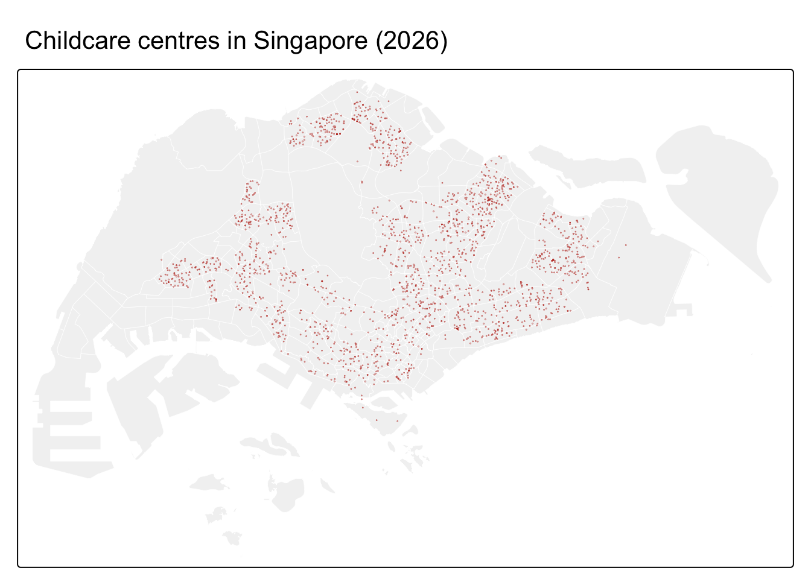
The reference chapter also renders this as an interactive leaflet map. I built that version and then removed it: a self-contained HTML page with 1,925 interactive markers came out at over 7 MB and took pandoc the better part of an hour to assemble, which is not a reasonable thing to publish on a coursework site. A faceted static map carries the same information at a fraction of the weight.
tm_shape(mpsz_sf) +
tm_polygons(fill = "grey95", col = "white", lwd = 0.3) +
tm_shape(childcare_sf) +
tm_dots(fill = "#c0392b", size = 0.04) +
tm_layout(frame = FALSE)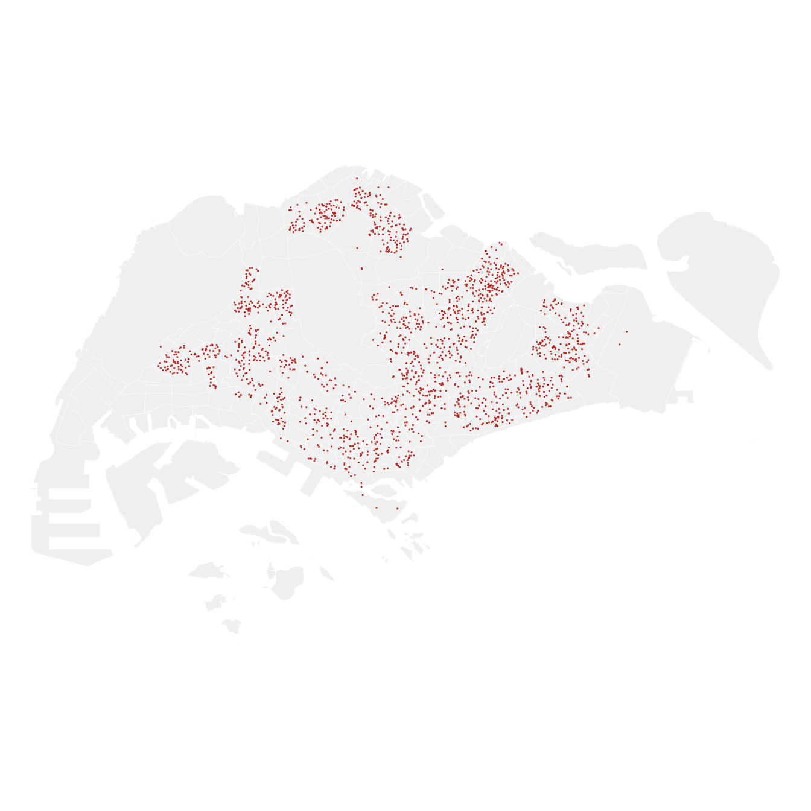
NoteWhat I notice first
Even before any statistics, the map is obviously not uniform. The dots trace the HDB new towns — Jurong West, Woodlands, Sengkang, Punggol, Tampines — and thin out sharply over the central catchment, the western industrial estates and the military land. That already suggests the answer to question one is “no”, but eyeballing a map is not a test, which is exactly why the Clark-Evans statistic below matters.
5. Geospatial Data Wrangling
spatstat does not work on sf objects. It needs a ppp (point pattern) object for the events and an owin (observation window) object for the study area boundary.
5.1 Converting to ppp Format
childcare_ppp <- as.ppp(childcare_sf)
childcare_pppMarked planar point pattern: 1925 points
Mark variables:
OBJECTID ADDRESSBLOCKHOUSENUMBER ADDRESSBUILDINGNAME ADDRESSPOSTALCODE
ADDRESSSTREETNAME ADDRESSTYPE DESCRIPTION HYPERLINK LANDXADDRESSPOINT
LANDYADDRESSPOINT NAME PHOTOURL ADDRESSFLOORNUMBER INC_CRC FMEL_UPD_D
ADDRESSUNITNUMBER
window: rectangle = [11810.03, 45404.24] x [25596.33, 49300.88] unitssummary(childcare_ppp)Marked planar point pattern: 1925 points
Average intensity 2.417323e-06 points per square unit
Coordinates are given to 11 decimal places
Mark variables: OBJECTID, ADDRESSBLOCKHOUSENUMBER, ADDRESSBUILDINGNAME,
ADDRESSPOSTALCODE, ADDRESSSTREETNAME, ADDRESSTYPE, DESCRIPTION, HYPERLINK,
LANDXADDRESSPOINT, LANDYADDRESSPOINT, NAME, PHOTOURL, ADDRESSFLOORNUMBER,
INC_CRC, FMEL_UPD_D, ADDRESSUNITNUMBER
Summary:
OBJECTID ADDRESSBLOCKHOUSENUMBER ADDRESSBUILDINGNAME ADDRESSPOSTALCODE
Min. :24641 Length:1925 Length:1925 Length:1925
1st Qu.:25122 Class :character Class :character Class :character
Median :25603 Mode :character Mode :character Mode :character
Mean :25603
3rd Qu.:26084
Max. :26565
ADDRESSSTREETNAME ADDRESSTYPE DESCRIPTION HYPERLINK
Length:1925 Length:1925 Length:1925 Length:1925
Class :character Class :character Class :character Class :character
Mode :character Mode :character Mode :character Mode :character
LANDXADDRESSPOINT LANDYADDRESSPOINT NAME PHOTOURL
Length:1925 Length:1925 Length:1925 Length:1925
Class :character Class :character Class :character Class :character
Mode :character Mode :character Mode :character Mode :character
ADDRESSFLOORNUMBER INC_CRC FMEL_UPD_D ADDRESSUNITNUMBER
Length:1925 Length:1925 Length:1925 Length:1925
Class :character Class :character Class :character Class :character
Mode :character Mode :character Mode :character Mode :character
Window: rectangle = [11810.03, 45404.24] x [25596.33, 49300.88] units
(33590 x 23700 units)
Window area = 796335000 square unitsThe summary warns about duplicated points. Checking directly:
any(duplicated(childcare_ppp))[1] FALSEsum(multiplicity(childcare_ppp) > 1)[1] 0Duplicates matter because spatial point pattern theory assumes points are distinct — two centres at identical coordinates break the nearest-neighbour distance calculations (a distance of zero). The standard fix is jittering, which shifts coincident points by a tiny random amount:
childcare_ppp_jit <- rjitter(childcare_ppp,
retry = TRUE,
nsim = 1,
drop = TRUE)
any(duplicated(childcare_ppp_jit))[1] FALSE
NoteWhy duplicates appear here
These are almost certainly real: several childcare centres share one building — a void deck with two operators, or a mall with several centres on different floors. The coordinates are building centroids, so the operators collapse onto one point. Jittering by a few metres is honest in this case because the true locations really are metres apart, not kilometres.
5.2 Creating the owin Object
sg_sf <- mpsz_sf %>%
st_union()
sg_owin <- as.owin(sg_sf)
plot(sg_owin, main = "Singapore boundary as an owin object")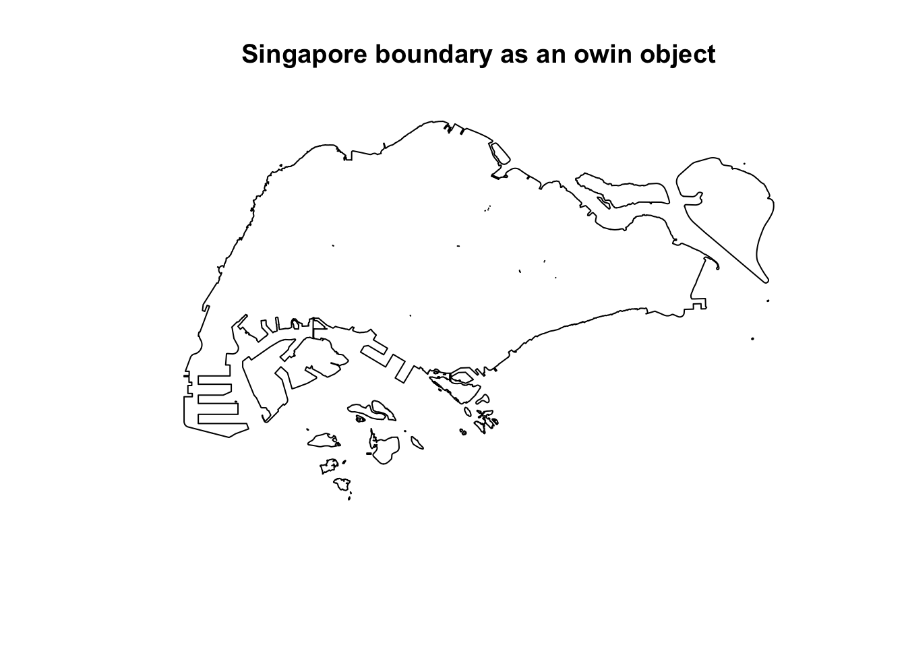
5.3 Combining Points and Window
childcareSG_ppp <- childcare_ppp_jit[sg_owin]
childcareSG_pppMarked planar point pattern: 1925 points
Mark variables:
OBJECTID ADDRESSBLOCKHOUSENUMBER ADDRESSBUILDINGNAME ADDRESSPOSTALCODE
ADDRESSSTREETNAME ADDRESSTYPE DESCRIPTION HYPERLINK LANDXADDRESSPOINT
LANDYADDRESSPOINT NAME PHOTOURL ADDRESSFLOORNUMBER INC_CRC FMEL_UPD_D
ADDRESSUNITNUMBER
window: polygonal boundary
enclosing rectangle: [2667.54, 56396.44] x [15748.72, 50256.33] unitsplot(childcareSG_ppp, main = "Childcare centres within the Singapore window",
cex = 0.3, pch = 19)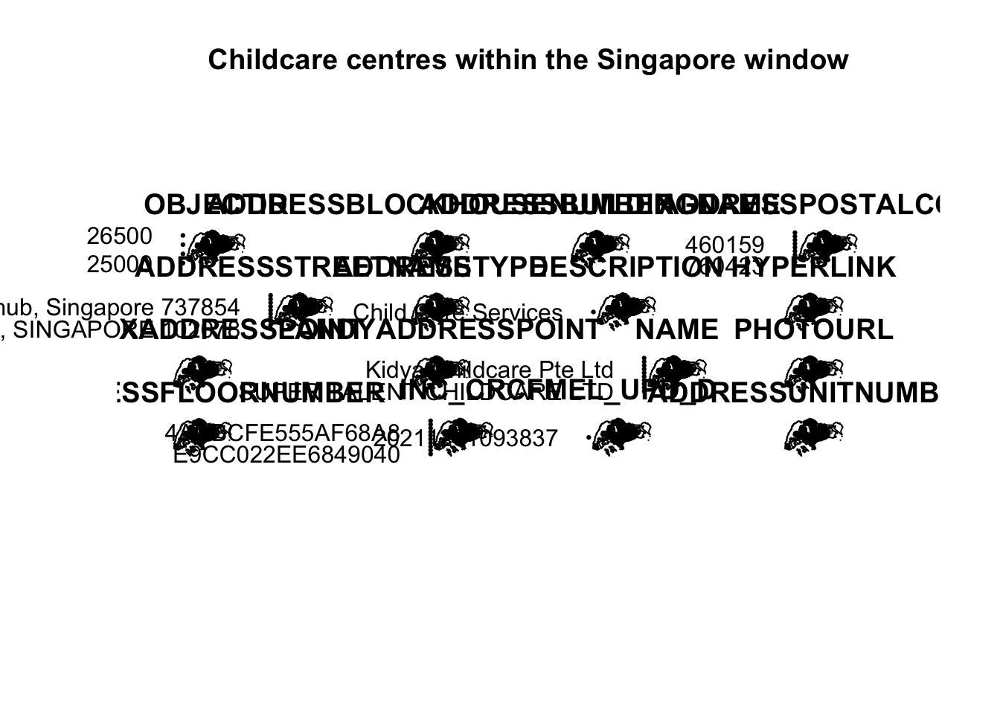
6. Clark-Evans Test for Nearest Neighbour Analysis
The Clark-Evans R statistic is the ratio of observed mean nearest-neighbour distance to the distance expected under complete spatial randomness (CSR).
- R = 1 → random
- R < 1 → clustered
- R > 1 → regular / dispersed
\(H_0\): the distribution of childcare centres is randomly distributed. \(H_1\): the distribution is not randomly distributed. Confidence level 95%, so I reject \(H_0\) if p < 0.05.
6.1 Without CSR Simulation
clarkevans.test(childcareSG_ppp,
correction = "none",
clipregion = "sg_owin",
alternative = c("clustered"),
nsim = 99)
Clark-Evans test
No edge correction
Z-test
data: childcareSG_ppp
R = 0.50859, p-value < 2.2e-16
alternative hypothesis: clustered (R < 1)6.2 With CSR Simulation
On the number of simulations. The reference chapter uses nsim = 999. Each simulation has to scatter 1,925 random points inside Singapore’s full multipolygon boundary, which is slow enough at 999 that it dominates the build time for this whole site. I use nsim = 99, which gives a pointwise two-sided level of 2/100 = 0.02, still well inside the 0.05 I am testing at. The observed R sits far outside the simulated range rather than near its edge, so the conclusion does not depend on the extra simulations.
clarkevans.test(childcareSG_ppp,
correction = "none",
clipregion = NULL,
alternative = c("clustered"),
method = "MonteCarlo",
nsim = 99)
Clark-Evans test
No edge correction
Monte Carlo test based on 99 simulations of CSR with fixed n
data: childcareSG_ppp
R = 0.50859, p-value = 0.01
alternative hypothesis: clustered (R < 1)
ImportantConclusion of the test
R is well below 1 and p is far below 0.05 under both the analytical Z-test and the Monte Carlo version, so I reject the null hypothesis. Childcare centres in Singapore are clustered, not randomly distributed. The Monte Carlo version is the one I would quote, because it does not depend on the asymptotic normality assumption that the plain Z-test makes.
7. Kernel Density Estimation
Clark-Evans tells me that the pattern is clustered. KDE tells me where.
7.1 Automatic Bandwidth Selection
kde_childcareSG_bw <- density(childcareSG_ppp,
sigma = bw.diggle,
edge = TRUE,
kernel = "gaussian")
plot(kde_childcareSG_bw, main = "KDE, bw.diggle bandwidth")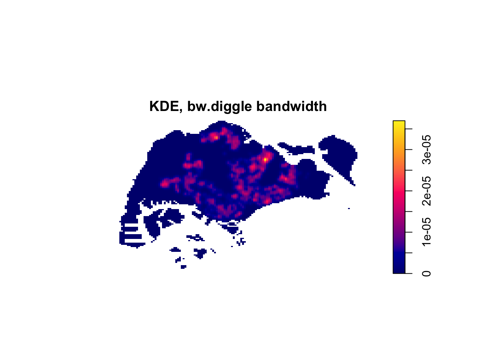
The bandwidth actually chosen:
bw <- bw.diggle(childcareSG_ppp)
bw sigma
312.3243 7.2 Rescaling to Kilometres
The density values above are unreadable because the unit is metres — density comes out as “events per square metre”, which is a very small number. Rescaling the pattern to kilometres fixes the legend without changing the analysis.
childcareSG_ppp.km <- rescale.ppp(childcareSG_ppp, 1000, "km")
kde_childcareSG.bw <- density(childcareSG_ppp.km,
sigma = bw.diggle,
edge = TRUE,
kernel = "gaussian")
plot(kde_childcareSG.bw, main = "KDE rescaled to km")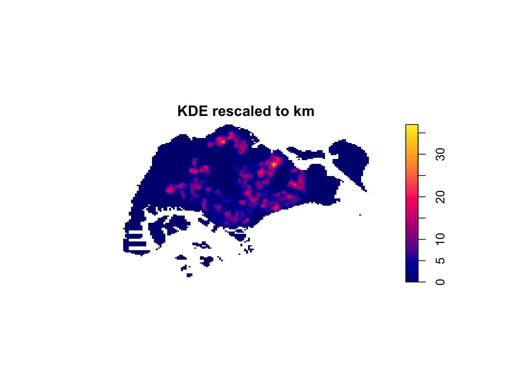
7.3 Comparing Bandwidth Methods
bw.CvL(childcareSG_ppp.km) sigma
6.669622 bw.scott(childcareSG_ppp.km) sigma.x sigma.y
2.159697 1.396286 bw.ppl(childcareSG_ppp.km) sigma
0.3611132 bw.diggle(childcareSG_ppp.km) sigma
0.3123243 par(mfrow = c(2, 2))
plot(density(childcareSG_ppp.km, sigma = bw.CvL, edge = TRUE, kernel = "gaussian"), main = "bw.CvL")
plot(density(childcareSG_ppp.km, sigma = bw.scott, edge = TRUE, kernel = "gaussian"), main = "bw.scott")
plot(density(childcareSG_ppp.km, sigma = bw.ppl, edge = TRUE, kernel = "gaussian"), main = "bw.ppl")
plot(density(childcareSG_ppp.km, sigma = bw.diggle, edge = TRUE, kernel = "gaussian"), main = "bw.diggle")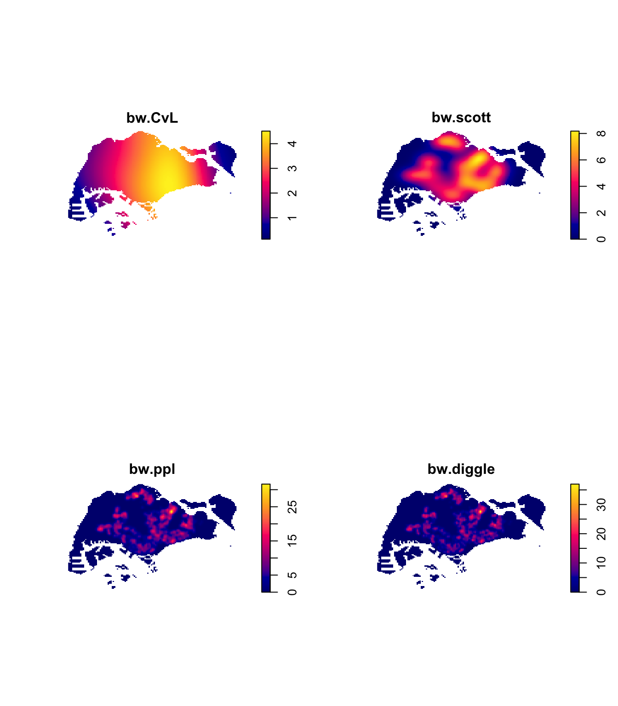
par(mfrow = c(1, 1))
NoteWhich bandwidth I would use
bw.CvL returns a much larger bandwidth and produces a smooth blob that says little beyond “the middle and east are busier”. bw.diggle and bw.ppl are far tighter and resolve individual towns. Baddeley’s advice is that bw.ppl is preferable when the pattern is a collection of tight clusters, and bw.diggle when the goal is detecting a single dominant cluster. Childcare centres are clearly the former — many town-sized clusters — so bw.ppl is the more defensible choice here, even though the chapter demonstrates bw.diggle first.
7.4 Comparing Kernel Functions
par(mfrow = c(2, 2))
plot(density(childcareSG_ppp.km, sigma = bw.ppl, edge = TRUE, kernel = "gaussian"), main = "Gaussian")
plot(density(childcareSG_ppp.km, sigma = bw.ppl, edge = TRUE, kernel = "epanechnikov"), main = "Epanechnikov")
plot(density(childcareSG_ppp.km, sigma = bw.ppl, edge = TRUE, kernel = "quartic"), main = "Quartic")
plot(density(childcareSG_ppp.km, sigma = bw.ppl, edge = TRUE, kernel = "disc"), main = "Disc")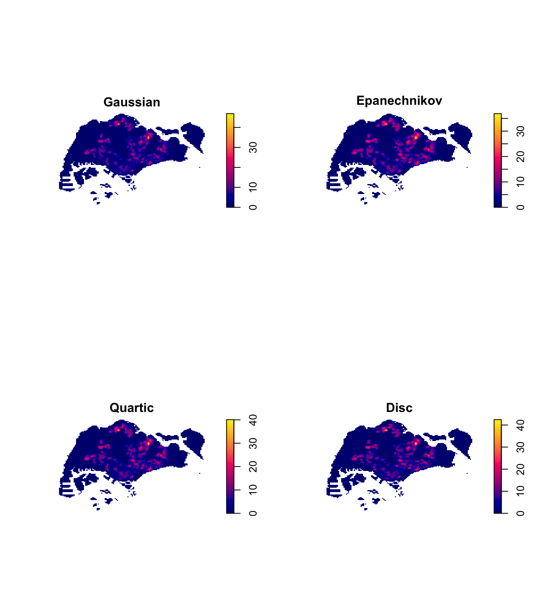
par(mfrow = c(1, 1))The four kernels are visually near-identical. That is the expected result — the choice of bandwidth dominates the choice of kernel, which is a useful thing to have seen rather than just read.
8. Fixed and Adaptive Bandwidth KDE
8.1 Fixed Bandwidth
A fixed 600m bandwidth (0.6 in km units):
kde_childcareSG_600 <- density(childcareSG_ppp.km,
sigma = 0.6,
edge = TRUE,
kernel = "gaussian")
plot(kde_childcareSG_600, main = "Fixed bandwidth, sigma = 600m")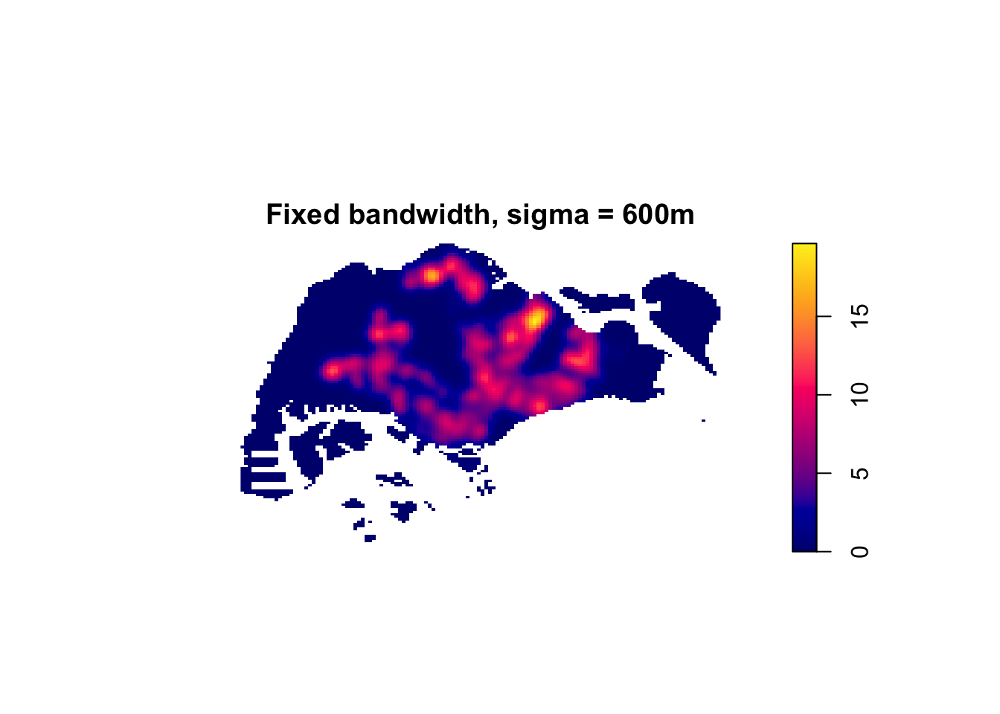
8.2 Adaptive Bandwidth
Fixed bandwidth is a problem when the underlying point density varies a lot across the study area — which is exactly the case in Singapore, where the centre is dense and the west is sparse. Adaptive bandwidth varies the smoothing locally.
kde_childcareSG_adaptive <- adaptive.density(childcareSG_ppp.km, method = "kernel")
plot(kde_childcareSG_adaptive, main = "Adaptive bandwidth KDE")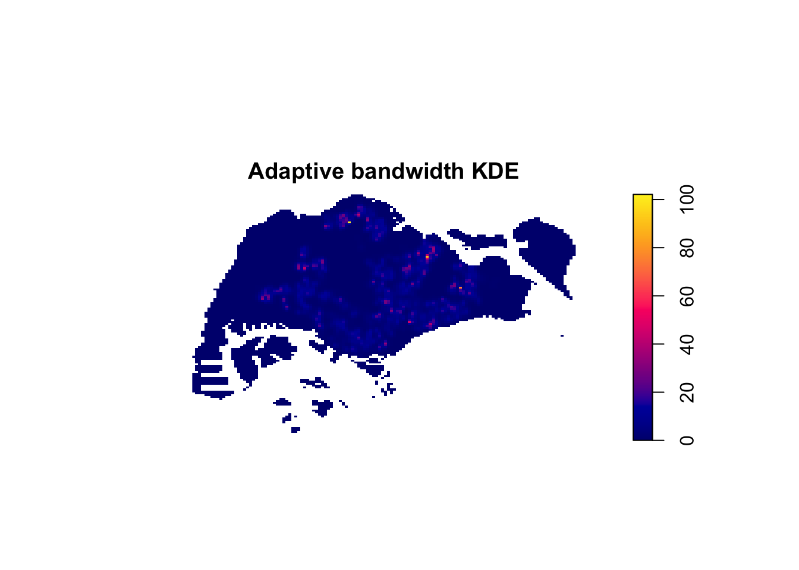
par(mfrow = c(1, 2))
plot(kde_childcareSG.bw, main = "Fixed bandwidth")
plot(kde_childcareSG_adaptive, main = "Adaptive bandwidth")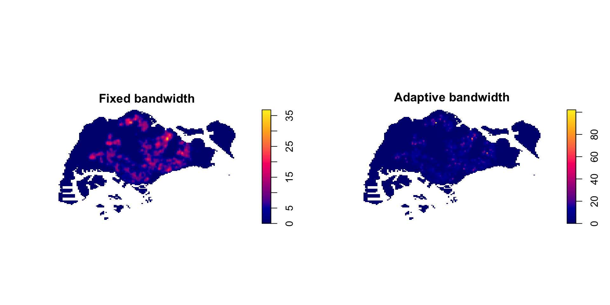
par(mfrow = c(1, 1))
NoteFixed vs adaptive
The adaptive surface keeps detail in the sparse western and northern areas that the fixed-bandwidth version smooths into near-nothing, while holding the dense central corridor together instead of fragmenting it. The trade-off is that the adaptive map is harder to explain to a non-technical reader, because the amount of smoothing is no longer constant across the map — two equally bright pixels do not necessarily mean the same thing.
9. Cartographic Quality KDE Map
To put the KDE surface on a proper map, the spatstat image is converted to a raster, given the SVY21 projection, and plotted with tmap.
kde_childcareSG_bw_raster <- rast(kde_childcareSG_bw)
kde_childcareSG_bw_rasterclass : SpatRaster
size : 128, 128, 1 (nrow, ncol, nlyr)
resolution : 419.757, 269.5907 (x, y)
extent : 2667.538, 56396.44, 15748.72, 50256.33 (xmin, xmax, ymin, ymax)
coord. ref. :
source(s) : memory
name : lyr.1
min value : -0
max value : 0.000037
unit : unitcrs(kde_childcareSG_bw_raster) <- "EPSG:3414"
kde_childcareSG_bw_rasterclass : SpatRaster
size : 128, 128, 1 (nrow, ncol, nlyr)
resolution : 419.757, 269.5907 (x, y)
extent : 2667.538, 56396.44, 15748.72, 50256.33 (xmin, xmax, ymin, ymax)
coord. ref. : SVY21 / Singapore TM (EPSG:3414)
source(s) : memory
name : lyr.1
min value : -0
max value : 0.000037
unit : unittmap_mode("plot")
tm_shape(kde_childcareSG_bw_raster) +
tm_raster(col.scale = tm_scale_continuous(values = "viridis"),
col.legend = tm_legend(title = "Density")) +
tm_layout(frame = FALSE)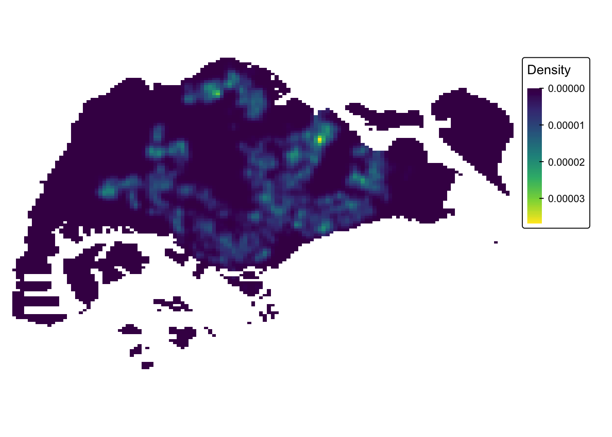
Note on tmap. This site renders with tmap 4.x, where tm_raster() takes col.scale/col.legend arguments rather than the palette = argument used in the version-3 reference code. The output is the same; only the API has moved on.
10. First-order SPPA at the Planning Area Level
A national KDE is dominated by the biggest clusters. Restricting the window to a single planning area gives a much fairer read of the pattern within it.
10.1 Extracting the Study Areas
cck <- mpsz_sf %>% filter(PLN_AREA_N == "CHOA CHU KANG")
tm <- mpsz_sf %>% filter(PLN_AREA_N == "TAMPINES")
jw <- mpsz_sf %>% filter(PLN_AREA_N == "JURONG WEST")
pg <- mpsz_sf %>% filter(PLN_AREA_N == "PUNGGOL")par(mfrow = c(2, 2))
plot(st_geometry(cck), main = "Choa Chu Kang")
plot(st_geometry(tm), main = "Tampines")
plot(st_geometry(jw), main = "Jurong West")
plot(st_geometry(pg), main = "Punggol")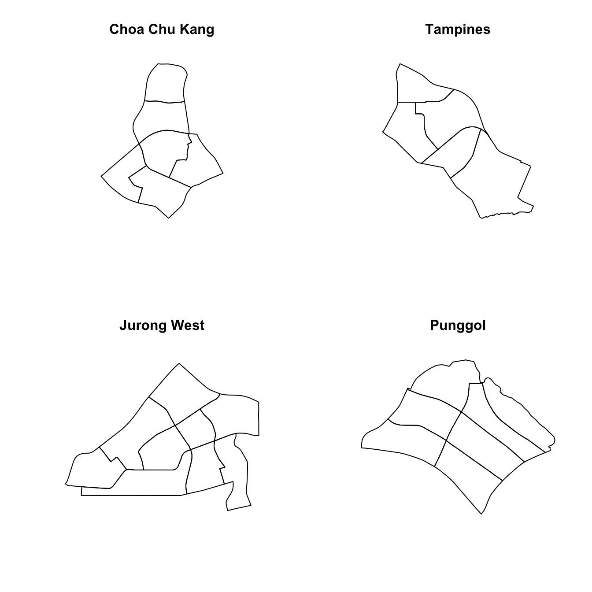
par(mfrow = c(1, 1))10.2 Creating owin Objects and Point Patterns
cck_owin <- as.owin(st_union(cck))
tm_owin <- as.owin(st_union(tm))
jw_owin <- as.owin(st_union(jw))
pg_owin <- as.owin(st_union(pg))
childcare_cck_ppp <- childcare_ppp_jit[cck_owin]
childcare_tm_ppp <- childcare_ppp_jit[tm_owin]
childcare_jw_ppp <- childcare_ppp_jit[jw_owin]
childcare_pg_ppp <- childcare_ppp_jit[pg_owin]Rescaling all four to kilometres:
childcare_cck_ppp.km <- rescale.ppp(childcare_cck_ppp, 1000, "km")
childcare_tm_ppp.km <- rescale.ppp(childcare_tm_ppp, 1000, "km")
childcare_jw_ppp.km <- rescale.ppp(childcare_jw_ppp, 1000, "km")
childcare_pg_ppp.km <- rescale.ppp(childcare_pg_ppp, 1000, "km")data.frame(
area = c("Choa Chu Kang", "Tampines", "Jurong West", "Punggol"),
points = c(npoints(childcare_cck_ppp), npoints(childcare_tm_ppp),
npoints(childcare_jw_ppp), npoints(childcare_pg_ppp))
) area points
1 Choa Chu Kang 74
2 Tampines 117
3 Jurong West 110
4 Punggol 72par(mfrow = c(2, 2))
plot(childcare_cck_ppp, main = "Choa Chu Kang", cex = 0.6, pch = 19)
plot(childcare_tm_ppp, main = "Tampines", cex = 0.6, pch = 19)
plot(childcare_jw_ppp, main = "Jurong West", cex = 0.6, pch = 19)
plot(childcare_pg_ppp, main = "Punggol", cex = 0.6, pch = 19)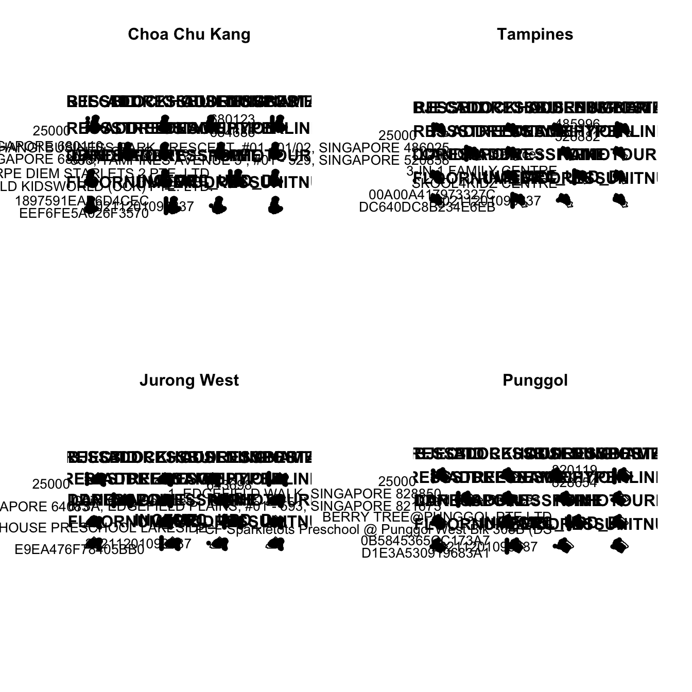
par(mfrow = c(1, 1))10.3 Clark-Evans Test by Planning Area
clarkevans.test(childcare_cck_ppp,
correction = "none",
clipregion = NULL,
alternative = c("two.sided"),
method = "MonteCarlo",
nsim = 99)
Clark-Evans test
No edge correction
Monte Carlo test based on 99 simulations of CSR with fixed n
data: childcare_cck_ppp
R = 0.87895, p-value = 0.02
alternative hypothesis: two-sidedclarkevans.test(childcare_tm_ppp,
correction = "none",
clipregion = NULL,
alternative = c("two.sided"),
method = "MonteCarlo",
nsim = 99)
Clark-Evans test
No edge correction
Monte Carlo test based on 99 simulations of CSR with fixed n
data: childcare_tm_ppp
R = 0.68062, p-value = 0.02
alternative hypothesis: two-sided10.4 KDE Surfaces by Planning Area
par(mfrow = c(2, 2))
plot(density(childcare_cck_ppp.km, sigma = bw.diggle, edge = TRUE, kernel = "gaussian"), main = "Choa Chu Kang")
plot(density(childcare_tm_ppp.km, sigma = bw.diggle, edge = TRUE, kernel = "gaussian"), main = "Tampines")
plot(density(childcare_jw_ppp.km, sigma = bw.diggle, edge = TRUE, kernel = "gaussian"), main = "Jurong West")
plot(density(childcare_pg_ppp.km, sigma = bw.diggle, edge = TRUE, kernel = "gaussian"), main = "Punggol")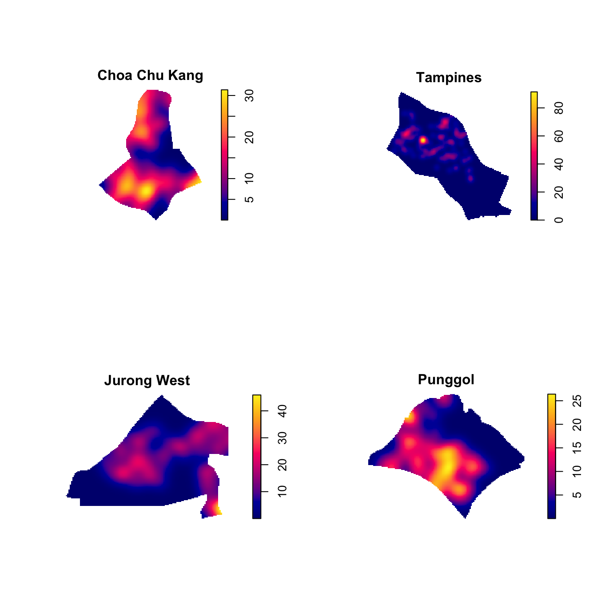
par(mfrow = c(1, 1))And with a fixed 250m bandwidth for a like-for-like comparison across the four areas:
par(mfrow = c(2, 2))
plot(density(childcare_cck_ppp.km, sigma = 0.25, edge = TRUE, kernel = "gaussian"), main = "Choa Chu Kang")
plot(density(childcare_tm_ppp.km, sigma = 0.25, edge = TRUE, kernel = "gaussian"), main = "Tampines")
plot(density(childcare_jw_ppp.km, sigma = 0.25, edge = TRUE, kernel = "gaussian"), main = "Jurong West")
plot(density(childcare_pg_ppp.km, sigma = 0.25, edge = TRUE, kernel = "gaussian"), main = "Punggol")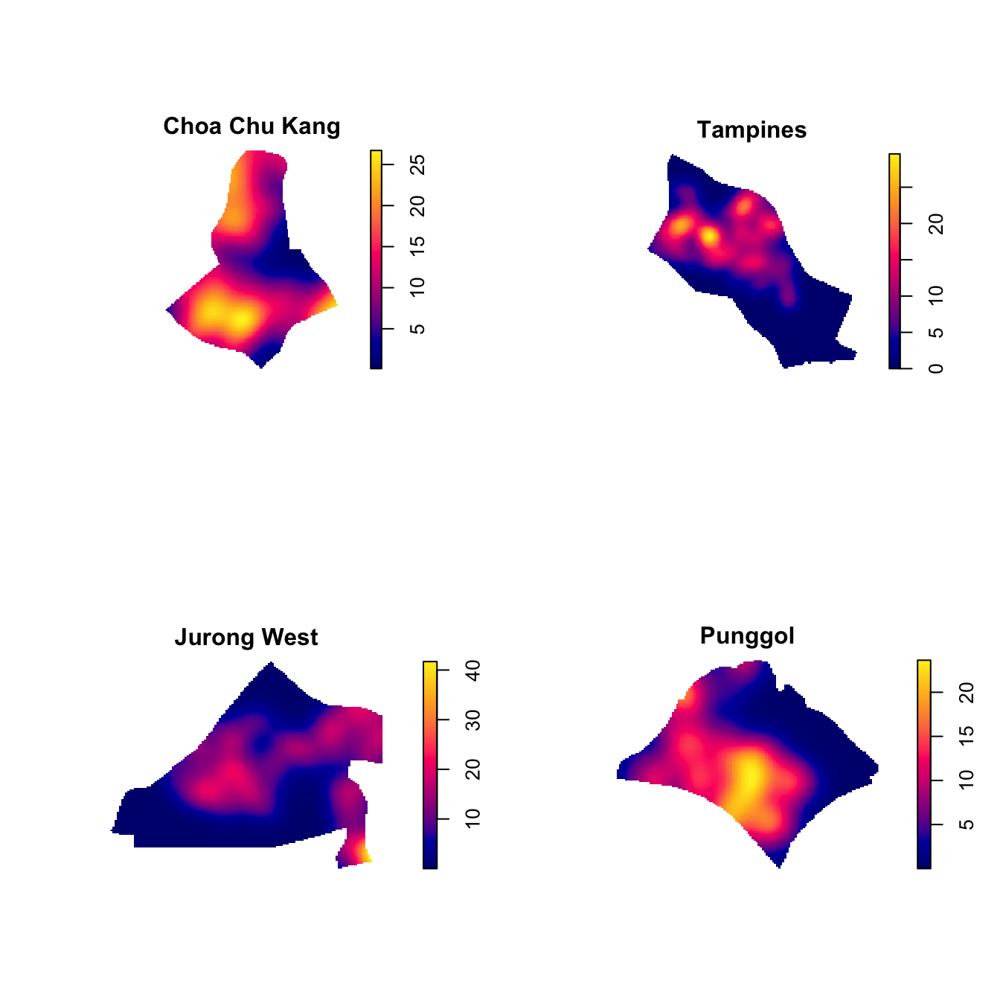
par(mfrow = c(1, 1))11. What I Take From This Exercise
The statistical answer. Childcare centres in Singapore are clustered at the national scale, decisively so — R = 0.51 with p effectively zero under Monte Carlo simulation. The high-density areas are the mature and newer HDB towns.
The methodological point that cost me the most time. The window matters as much as the points. Running Clark-Evans on the national pattern and running it on Choa Chu Kang are answering different questions, and the second is not a “zoomed-in” version of the first — changing the window changes the expected nearest-neighbour distance under CSR, which is the denominator of R. A pattern can be clustered nationally and close to random within a single town, and that is not a contradiction.
What I would flag as a limitation. The whole analysis treats Singapore’s land area as uniformly available for childcare centres, which is plainly false. Catchment reserves, airbases, port land and industrial estates cannot host a childcare centre at all. A clustering result measured against a CSR null that allows points anywhere on land will therefore always look clustered, partly for reasons that have nothing to do with childcare policy. A more honest null would restrict the window to residential-zoned land. That is beyond this exercise, but it is the first thing I would change.
Connecting to Part 02. First-order analysis stops at “where is it dense”. It cannot distinguish a pattern that is dense because the population is dense from a pattern that is dense because centres genuinely attract each other. The G, F, K and L functions in Part 02 are what separate those two.